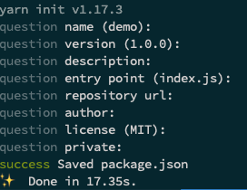

身處在講求效率的時代，完整的開發流程當然少不了 CI/CD。什麼是 CI/CD 呢？CI ( Continuous Integration ) 中文為「持續性整合」，目的是讓專案能夠在每一次的變動中都能通過一些檢驗來確保專案品質。CD ( Continuous Deployment ) 中文則為「自動化佈署」，讓專案能夠自動在每次變動後能以最新版本呈現。
由於想要體會 CI/CD 到底有多方便，於是想要藉由實做一個簡單的 Node.js 專案來實際體驗看看。
內容架構
1.寫簡易的 Node.js Server
2.使用 CircleCI 整合 eslint／jest（CI）
3.使用 CircleCI deploy 到 GCP App Engine（CD)
NodejS Hello CICD demo
這是專案最終架構：
1 | ├── app.yaml |
哇！看起來很複雜？別急，下面會一一帶你做一遍！
Step by Step
建立資料夾
1 | mkdir demo-server |
初始化專案
1 | yarn init |
這時會出現問題問你，若沒有特殊設定可以一路按 Enter 就好，回答完後就會出現 package.json 。

這樣就能產生出 package.json 囉！
開發專案少不了版本控制，這樣就能開始使用 git 了 🥳
1 | git init |
而不必要的檔案記得寫進 .gitignore 讓 git 忽略。
新增 .gitignore
1 | node_modules |
安裝 express 及 babel
express 是一個 Node.js 的後端框架，這次 demo 會用來處理 server。 由於 Node.js 處理檔案引入和匯出方法為 require 及 module.export ， 而 es6 出現了 import 及 export，如要使用就要使用 babel 來 transpile。
1 | yarn add express |
babel 只有在開發會用到，注意後面要加 — dev。
建立 src/server.js
1 | import express from 'express'; |
本機跑起來
1 | yarn babel-node src/server.js |
babel-node 會在 node runtime 即時使用 babel transpile javascript。
這樣就能在 localhost 跑起來了 😌